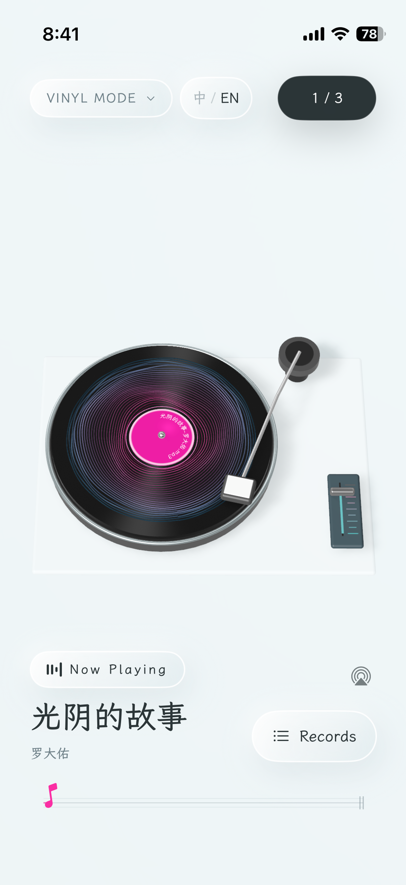

Offline music player for iPhone
Your music, on vinyl.
VinylPocket is an offline music player for iPhone with an interactive 3D turntable. Play MP3s you import from Files and tracks you’ve downloaded from a WebDAV NAS.
iPhone · iOS 18 or later
A turntable you can touch.
Drop the needle
Tap the record or tonearm to play or pause. Drag the tonearm to a new spot in the track.
Change the record
Swipe the vinyl to switch tracks, or pick a song from your collection and watch the record settle onto the platter.
See the music
Watch the grooves respond to the sound as it plays. Tilt your iPhone to see the turntable from a different angle.

Bring your own music.
Browse album sleeves, find tracks by song, artist, or album, and arrange your playback queue. Start with music from any of these sources.
-
Files & iCloud Drive
Use the Files app to import MP3 and other audio files from your iPhone or iCloud Drive. VinylPocket keeps a copy for offline playback.
Play local MP3 files offline -
WebDAV NAS
Connect to a compatible HTTPS WebDAV server, browse folders, and add individual tracks or a folder of music.
Play music from a WebDAV NAS -
Direct audio links
Paste an HTTPS link to an audio file. VinylPocket downloads the track before playback and keeps a local cache.
Common questions
VinylPocket supportCan I listen offline and with the screen locked?
Yes. Imported files and fully cached remote tracks play offline. Background playback and lock screen controls let you keep listening when you leave the app.
What does my NAS need to support?
Use an HTTPS WebDAV address with a certificate trusted by iOS. Enter your username and password if the server requires Basic authentication.
Does VinylPocket come with songs?
VinylPocket starts with an empty collection. Add your own audio files to build your music library.